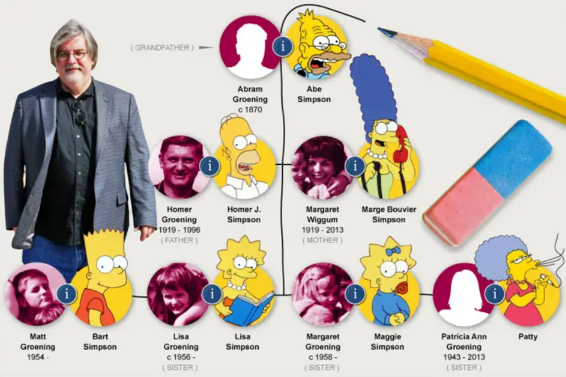
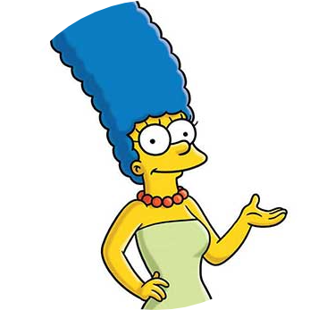
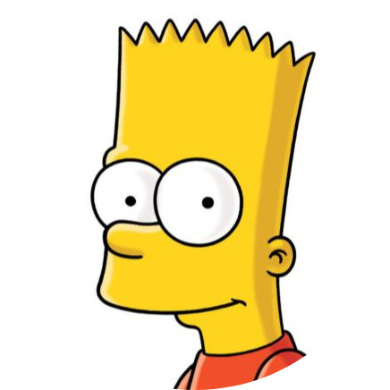
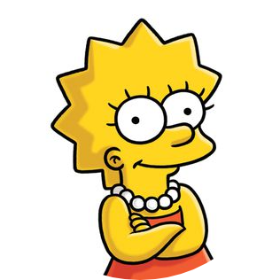
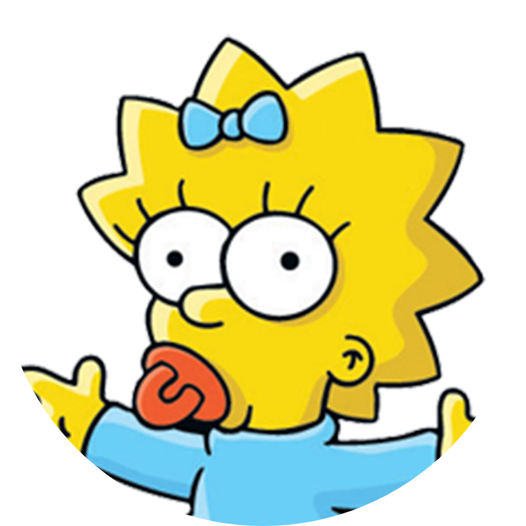

Matt Groening
"Los Simpson son una combinación de mi propia familia y la televisión que vi mientras crecía"
La familia fue concebida por Groening y poco después debutó en una serie de cortos de animación producidos por James L. Brooks. Groening creó una familia disfuncional y nombró a sus personajes en honor a los miembros de su propia familia, sustituyendo su propio nombre por Bart.




